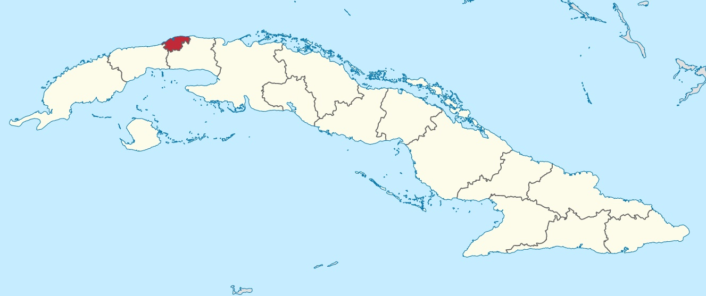

Havana é a capital da República de Cuba, sua maior cidade, o principal porto, seu centro econômico-cultural e seu principal centro turístico. É a cidade mais populosa do país, com uma população de 2 106 146 habitantes de acordo com dados de 2012 e a terceira mais populosa da região do Caribe. Como capital de Cuba, a cidade é a sede oficial dos órgãos superiores do Estado e do governo cubano, de todas as organizações centrais e de quase todas as empresas e associações de âmbito nacional. Além disso, reúne o maior número de filiais e empresas-mãe de entidades estrangeiras com sede em Cuba.
Fundada em 1514 (inicialmente na costa sul da ilha) pelo conquistador Pánfilo de Narváez (sob as ordens de Diego Velázquez de Cuéllar), sob o nome fundador de Villa de San Cristóbal de La Habana, foi uma das sete primeiras vilas fundada pela coroa espanhola na ilha. Devido à sua localização privilegiada, na costa do Atlântico Norte, e às características de sua baía, a cidade se tornou um importante centro comercial, motivo pelo qual foi alvo de ataques e saques por piratas e corsários durante o Primeiros anos do século XVI. Em 1561, a Coroa estabelece que a cidade seja o local de concentração dos navios espanhóis das colônias americanas antes de cruzar o oceano juntos (Frota das Índias), construindo assim, para sua proteção, defesas militares na entrada do Baía de Havana e em lugares estratégicos, tornando a cidade uma das melhores defendidas no Novo Mundo. Em 20 de dezembro de 1592, Felipe II confere à cidade o título de "cidade", vinte e nove anos depois que o governador de Cuba mudou sua residência oficial de Santiago de Cuba, sede do governo da ilha até então. Em 1634, por decreto real, ele foi declarado "Chave do Novo Mundo e Salvaguarda das Índias Orientais" e, em 1665, recebeu o direito de manter seu próprio escudo, no qual as fortalezas eram representadas por três torres (La Real Fuerza,El Morro e La Punta) que defendiam a cidade.
O açúcar e o comércio influenciaram bastante o fato de que, durante os séculos XIX e XX, a cidade passou não apenas por um profundo processo de expansão de seu território, mas também por um crescimento demográfico, socioeconômico e cultural, fatores que fizeram de Havana um dos cidades mais ricas e notórias da região da América Central e do Caribe. Novos bairros como El Cerro ou El Vedado surgem nessa fase, onde a nova burguesia de Havana estaria concentrada; Enquanto isso, as áreas antigas da cidade se tornariam áreas de moradias e cidadelas. Não é até a década de 1950 que a forma atual da capital começa a ser moldada, como resultado do surgimento do conceito especulativo de propriedade horizontal, bem como do estabelecimento de centros e subcentros urbanos ao longo desse século. O triunfo da Revolução Cubana e a aplicação de projetos nacionais de transformação provocaram o aumento da emigração para as cidades, causando o boom demográfico em Havana e, com ela, sua expansão, desta vez para as áreas leste e sul.
Seu patrimônio histórico, arquitetônico e, acima de tudo, cultural, expresso na fusão entre europeus, africanos e aborígines, juntamente com outros componentes étnicos e culturais mais contemporâneos, faz da cidade um importante destinatário do turismo internacional e do centro da cidade. Vida nacional Seu centro histórico, declarado Patrimônio Mundial pela UNESCO em 1982.8 é hoje um dos complexos arquitetônicos mais bem preservados da América Latina. Entre seus monumentos mais representativos estão a Catedral de Havana, a Plaza de Armas, o Castillo del Morro, o Museu da Revolução, o Palácio Nacional de Belas Artes, o Grande Teatro de Havana, o Capitólio, a Plaza de la Revolução e o Malecón, talvez o símbolo internacional mais reconhecido da cidade.